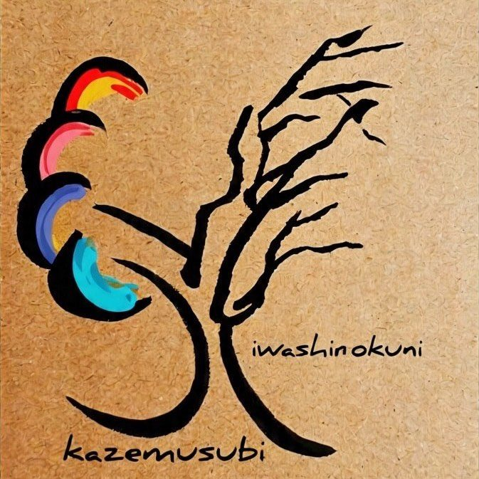
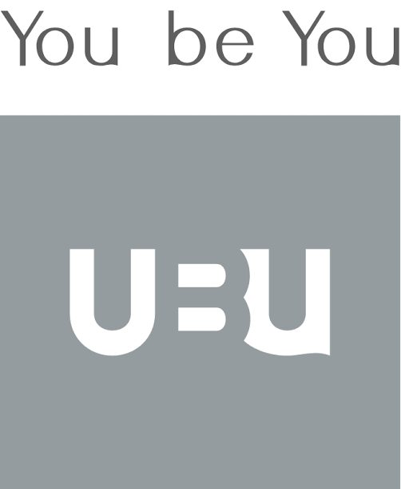
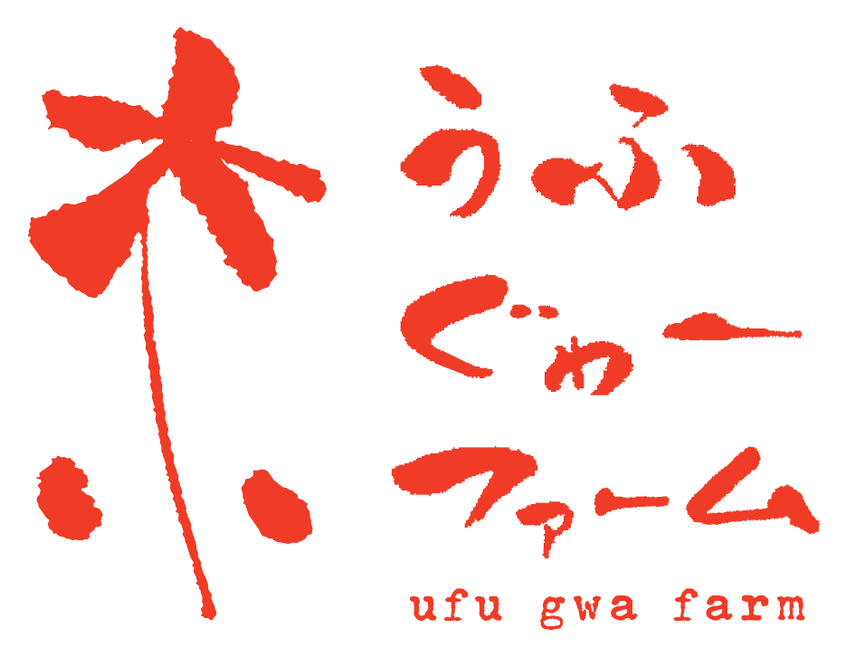

実際にある現場の一覧です。
進行中・完了・これからの3つに分けています。
水源の郷に、新たな有機農場を一から立ち上げる。稲作・大豆・畑作の拠点として整えていきます。
数年放置されていた田を開墾し、稲作を再開。水の循環のいちばん上流にあたる水源の郷です。
子連れ家族を迎えるための古民家再生。皆が寝泊まりできる拠点として整備を進めています。

2025〜 ｜ with 岩代国風結び ｜ 会津美里町・伊佐須美神社水源・沢・山と土を整える。伊佐須美神社の社叢（杜）の再生を含め、岩代国風結びと通年で活動。
標高800mの豪雪地で、大型トラクターに頼りきらない稲作を実証中。反収6俵が当面の目標です。
中古農機・設備の入手から修理、施工まで。中山間地に合う小型・低予算の機械という前提を支えています。

with YouBeYou株式会社 ｜ 会津美里町都市と農をつなぐ、循環する暮らしの実践共同体。関わる人が生産の現場に立ち続けられる関係を、共に設計しています。
小学校の授業や高校生の合宿、大学との共同研究。村を、学びの場として開いています。

with 株式会社G-with ｜ 沖縄県本部町「死ぬまで幸せに暮らせる社会（IKIGAI）」を掲げ、移住者が経営を引き継ぐ。2026年、新たな農園としてスタートを切りました。
田植えや稲刈りなど、人手の要る時期に数日から。人数の上限は設けていません。
その年の実りを、関わってくださった皆さんと分かち合う日。パートナーの方は宿泊での参加も。
会津・奥会津に築く、生命の基盤。
新しい豊かさへとつづく道。
連絡先：official@zen-bu.co ／ 発行：株式会社ZEN-BU